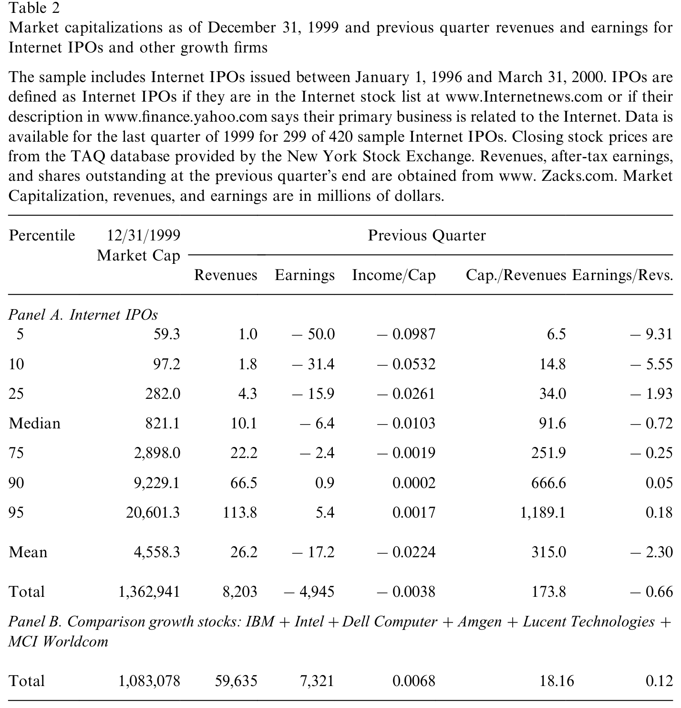
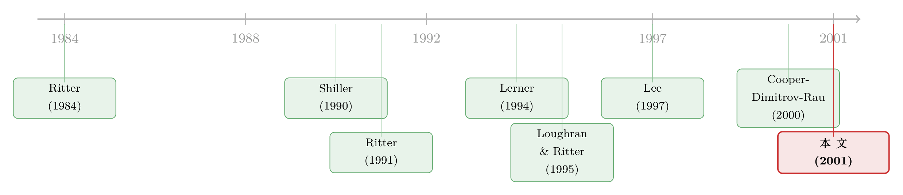

离互联网公司最近的那群人，真信它被高估了吗？
本文读的是 Schultz & Zaman (2001, Journal of Financial Economics)：在 1999–2000 年那场史无前例的互联网新股狂潮里，作者不去猜「这些股票到底贵不贵」，而是去看离公司最近的三种人——管理层、承销商、风险投资人——到底怎么做。结论出人意料：如果他们真信手里的股票被疯狂高估，本该拼命套现、拼命圈钱，可他们偏偏卖得很少；倒是「抢地盘」的证据强得扎眼。换句话说，那个「精明的内部人正在收割傻钱」的故事，证据其实很弱。
1 一个绕开「贵不贵」的提问
先把场景摆出来。从 1999 年 1 月到 2000 年 3 月，短短 15 个月里，321 家互联网公司上市，平均募资 $86 百万，平均上市首日回报（即「抑价」，underpricing）高达 91%。这些公司大多几乎没有收入——321 家里上一季度盈利的只有 28 家。很多公司成立才几个月。
这就是那个被反复讲述的故事：Amazon.com 在 1998 年底的市值，超过了全美所有传统书店的总和。于是一种说法广为流传——互联网股票被非理性地高估了，精明的管理层和投行正抢在泡沫破灭前，把高价的股票塞给天真的公众。
但这里有个方法论上的难题：你怎么证明一只股票「被高估」？你需要知道它的基本价值，而基本价值恰恰是没人说得清的东西。Schwartz and Moon (2000) 就提醒过，只要初始增长率够高、增长本身又够「波动」，看上去贵得离谱的估值其实可能是合理的——毕竟 Amazon 的收入两年里涨了 938%，从 1997 年三季度的 $37.9 百万冲到 1999 年三季度的 $355.8 百万。
这正是本文最聪明的一招：作者绕开了「股票到底贵不贵」这个无解的问题，转而问一个可观测的问题——那些信息最充分、利益最相关的人，他们的行为像不像「相信股票被高估」的样子？
接着，一个自然的问题是：这群「最近的人」是谁？答案是三种——公司管理层、承销商、风险投资人。他们各自掌握着外人没有的信息，也各自承担着自己的声誉与财富。如果连他们都在用脚投票说「这是泡沫，快跑」，那高估假说就更可信；反之，如果他们的行为与「相信泡沫」背道而驰，那个「割韭菜」的叙事就站不住脚了。
2 这些公司确实「早产」，也确实「很贵」
在审讯这三类人之前，作者先用数据把背景钉死。
第一，互联网公司上市得早得离谱。 Table 1 显示，互联网 IPO 的平均抑价是 80.7%，而其他 IPO 只有 21.6%，差异的 t 值高达 12.17；中位数则是 50.0% 对 9.37%。抑价高，通常是「年轻、不确定性大」的标志。更直接的证据是盈利能力：420 家互联网公司里，上市前一季度盈利的只有 42 家；息税前利润与市值之比（EBIT/market capitalization）无论均值还是中位数都是负的，而其他 IPO 是正的。
第二，按传统标准，这些股票贵得发指。 最刺眼的一个数字藏在「收入/市值」里：互联网公司上一年收入平均只占市值的 7.1%，而其他公司是 57.1%（t 值 -17.41）。
到了 1999 年 12 月 31 日，画面更夸张。如 Table 2 所示，样本中 299 家仍在交易的互联网公司，上一季度合计收入 $8.20 十亿、却亏掉 $4.95 十亿——可它们的总市值是 $1,363 十亿。作者拉来六家传统成长股做对照：IBM、Intel、Dell、Amgen、Lucent、MCI Worldcom 加起来市值 $1,083 十亿，比互联网股票还少 $270 多十亿；但这六家上一季度收入 $59.6 十亿，是全部互联网公司的 7 倍多，盈利 $7.32 十亿。

Table 2: provides summary statistics on market capitalization, revenues and
逐家看更有意思：86.3% 的公司在上一季度亏钱；中位数公司的市值是它上季度收入的 92 倍；最传神的一句是——每一美元收入，中位数公司要亏掉 72 美分。
到这里，「贵」这件事似乎板上钉钉。但真正关键的一步在于：贵，不等于内部人「知道它贵并且在套现」。下面才是全文的反转。
3 反转：管理层卖得太少了
如果管理层真信自己的股票被暂时高估、并预期价格会很快回归基本面，他们会怎么做？答案很直接：尽可能多卖自己手里的老股，尽可能多发新股圈钱。趁高位落袋为安，这是任何「相信泡沫」的人的理性选择。
然而作者发现的事实恰好相反：
- 在互联网 IPO 中，内部人卖出的自有股份比其他 IPO 中的内部人更少；
- 互联网公司在发行中卖出的股权比例，通常也小于其他公司。
这与「内部人相信股票被高估」的图景是冲突的。当然，作者非常诚实地指出，这个证据本身有多种解读：也许内部人认为价格会在高位停留很久，所以不急着卖；也许是因为互联网 IPO 抑价太狠（80.7%！），他们宁愿等过了禁售期再卖。可即便如此——在调整了上市后的表现之后——「互联网公司比其他近期 IPO 更倾向于做增发（seasoned equity offering, SEO）」的证据也很弱。
这里有个必须讲清的逻辑闸口：「管理层没在套现」并不等于「股票就是合理定价的」。 大量研究（Heaton 1998；Camerer and Lovallo 1999）表明，创业者往往持续而不切实际地乐观——他们不卖，可能只是因为他们真心相信自己的公司值这个价。所以这份证据真正反驳的，是高估假说里那个更阴险的版本：聪明的管理层和投行合谋，蓄意把高价股票倒给公众。这个「割韭菜」剧本，缺乏内部人行为的支撑。
（关于互联网公司把「上市本身」当成一种营销与品牌投资、而非单纯套现的逻辑，可参见《把「钱留在桌上」当成一笔广告费——新股折价的另一种算法》。）
4 投行与风投：把声誉押了上去
故事到这里还没完。然后，作者把镜头转向另外两类「最近的人」——承销商和风险投资人。这两类人有一个共同点：他们反复进入资本市场，声誉资本就是他们的命根子。如果他们真信某批 IPO 是非理性高估的，最理性的做法是躲开，免得将来砸了招牌。
可事实是：
- 风险投资人远比在其他 IPO 中更频繁地卷入互联网公司的 IPO；
- 互联网 IPO 更可能由声誉最高的承销商来承做。
换句话说，那些最该爱惜羽毛、最该回避泡沫的人，不仅没躲，反而扎堆涌了进来。这又是一记对「精明人收割傻钱」叙事的反证。
一个有意思的旁注：尽管互联网股票风险明显更高，承销费率却几乎一样——互联网 IPO 平均承销价差 6.98%，其他 IPO 是 6.85%。Chen and Ritter (2000) 记录的「7% 惯例」，在 87.6% 的互联网 IPO 和 60.6% 的其他 IPO 中被遵守。（关于这条「7% 几乎固定不变」的承销费惯例如何反过来影响新股定价，见《7% 这把「固定的尺子」，竟能改写新股的价格》。）
5 真正强的证据，在「抢地盘」那一边
如果说「高估并套现」的证据是弱的，那么另一个假说——抢市场份额——的证据却强得多。
为什么互联网行业要抢地盘？因为它具备两个特征。其一，市场份额大的公司反而能收更高的价：Smith, Bailey and Brynjolfsson (1999) 发现，网上同质商品（书、CD）的价格离散程度与传统零售相当，价格最低的往往是小商家，而像 Amazon 这样份额大的反而能收溢价——因为「认知度」「信任」「转换成本」构成了先发优势。其二，互联网生意是典型的规模经济：可变成本低、固定成本高，软件一旦写好，多服务一个客户几乎不增加成本（Bezos 本人就说过，电商「是一门规模生意」）。
在这样的行业里，IPO 不只是融资，更是抢地盘的弹药库：它提供烧钱抢份额的资本，提供并购别人的股票货币，还顺带带来曝光和品牌。于是作者发现，互联网公司的并购频率远高于其他近期 IPO，且并购对象要么是其他互联网公司、要么能补强自己的互联网业务；它们结成的战略联盟也远多于其他 IPO。 这是一群「在赛跑」的公司，不是一群「在逃顶」的公司。
（这也正呼应了后来 Hoberg & Phillips 那类研究的疑问——如果互联网是个赢家通吃的赛道，那当年到底是进入太多还是太少？可参见《互联网泡沫，错不在「进得太多」，而在「进得太少」？》。）
6 文献脉络
把这篇论文放回它所在的河流里，会看得更清楚。
最早的源头是 IPO「热发」与长期表现之谜。Ritter (1984) 描述了 1980 年的热发市场；Ritter (1991) 与 Loughran and Ritter (1995) 给出了那个著名的「新发行之谜」——IPO 在上市后五年里显著跑输同规模同行业的股票。一种解读是：所有近期 IPO 都被非理性定价了。但 Ritter (1991) 自己也指出，最差的是那些小而年轻的公司——而互联网公司正是又小又年轻。

接着是「谁在择时」这条线。Shiller (1990) 提出「主持人假说」（impresario hypothesis）：承销商擅长嗅出公众何时对某类 IPO 上头，于是故意压低定价制造轰动。Loughran and Ritter (2000) 进一步认为，IPO 的扎堆可以用「管理层择时、利用暂时性错估」来解释。Lee (1997) 用 SEO 检验「公司是否明知故卖高估股权」，发现只有在以二级（老股）发售为主、且内部人事先在卖时，股票才在发行后跑输。Lerner (1994) 则盯住风投：他比较生物科技公司 IPO 与私募融资的时点，发现风投确实会把 IPO 安排在市场高点。
于是问题变得尖锐：既然前人发现「内部人会择时、风投会择时」，那在互联网这个史上最像泡沫的时刻，这些人是不是也在择时收割？Schultz and Zaman (2001) 站的就是这个位置——它把 Lee (1997)、Lerner (1994) 的「看行为而非看价格」的思路，搬到了互联网 IPO 这个极端样本上，得到了一个反直觉的答案：这一次，内部人的行为更像「抢地盘」，而不像「逃顶」。
评论与延伸（Q&A + 研究方向）
（a）几个可能的疑问
Q：作者凭什么说自己「证明」了股票没被高估？
它没有，也不打算这么说。本文的命题是窄而精确的：离公司最近的人，其行为不支持「他们相信股票被高估并蓄意套现」。股票客观上可能仍是泡沫——只是吹泡泡的未必是这群内部人，更可能是非理性乐观（管理层）叠加非理性追捧（公众）。把「行为证据」误读成「估值结论」，是最容易犯的错。
Q：内部人少卖股票，会不会只是因为抑价太狠、他们想等禁售期后再卖？
这正是作者主动提出的替代解释，也是这份证据最大的软肋。
80.7%的首日抑价意味着在 IPO 当天卖老股「太亏」，理性的内部人会选择留到禁售期之后。作者用「上市后增发倾向」来侧面检验，但结果偏弱。所以严格说，「少卖」既能被「不信高估」解释，也能被「抑价太高、择时延后」解释——本文给的是「证据不支持割韭菜」，而非「铁证证明合理定价」。
Q：风投和顶级投行涌入，难道不能解释成「他们也在追泡沫赚钱」吗？
可以这样质疑，而这恰恰是声誉机制有意思的地方。理论（Megginson and Weiss 1991；Carter, Dark, Singh 1998）说，反复进场的中介最怕砸招牌，因此他们的「认证」本应是质量信号。如果他们明知是非理性泡沫还往里冲，要么是声誉机制在那个时点失灵了，要么是他们也真心相信前景。本文倾向后者，但无法排除前者——这是一个识别上的开放问题。
Q：把互联网公司和「其他 IPO」对比，这个对照组干净吗？
不算完美。作者自己承认，「哪些算互联网公司」带有不可避免的主观性——有线电视公司提供上网服务却没被算进来；而 1999–2000 年连非互联网 IPO 的抑价都飙到 50% 以上，说明整个发行市场都在发烧。对照组本身被「污染」了，会让互联网与非互联网的差异被低估。
Q：这篇文章和「IPO 长期跑输」那条经典文献是什么关系？
互补而非重复。Ritter (1991) 关心的是上市之后的长期收益，本文关心的是上市那一刻内部人的动机。一个看「事后股价」，一个看「事前行为」。本文实际上为长期跑输提供了一种「非阴谋论」的微观基础：如果跑输不是因为内部人蓄意倒货，那它更可能源于普遍的乐观与狂热。
Q：「抢地盘」证据强，是不是就说明市场是有效的？
不能这么跳。「公司在抢地盘」和「股票被合理定价」是两件事。完全可能：公司真在理性地抢份额，同时市场又给这份额开出了离谱的价。本文真正排除的只是「内部人合谋收割」这一条，市场是否有效仍悬而未决。
（b）几个可能的研究问题与提案
- 禁售期到期后的内部人抛售：到底是「逃顶」还是「正常退出」？
- 【经济故事】本文的命门是「IPO 当天少卖 ≠ 不信高估」。真正的检验场在禁售期（lockup，通常 180 天）到期那一刻：如果内部人是「相信暂时高估、只是延后兑现」，应当在解禁后集中、激进地抛售；若是普通退出，则抛售应平缓。
-
【可行性】高。SDC + CRSP + 招股书披露的 lockup 到期日 + Form 144/内部人交易数据齐备，事件研究框架成熟。可比较互联网与非互联网 IPO 在解禁日附近的异常成交与累计异常收益。
-
承销商声誉的「事后清算」：扎堆互联网，伤没伤到招牌？
- 【经济故事】本文说顶级投行没回避互联网 IPO。若声誉机制真起作用，那些承做最多互联网 IPO、且这些 IPO 事后崩得最惨的投行，应在 2000–2002 年的市场份额、定价权（费率）、客户留存上受到惩罚。
-
【可行性】中。需要构造各投行的「互联网暴露度」与其承做 IPO 的后市表现，再追踪其后续承销份额。识别难点在于把「声誉惩罚」与「市场整体萎缩」分开，可用非互联网投行做对照。
-
风投的择时 vs. 抢跑：用基金层面的进入与退出重做 Lerner (1994)。
- 【经济故事】Lerner 发现风投会把 IPO 安排在高点。互联网时代是检验这一点的极端样本：风投是「在高点把公司推上市后火速套现」，还是「为抢地盘持续注资、推迟退出」？两者对「VC 是否在收割公众」给出相反答案。
-
【可行性】中高。VentureXpert/PitchBook 提供轮次、估值与退出时点，可在 IPO 后按季度跟踪 VC 持股变动，区分「快速派发」与「长期持有」。
-
从信用市场侧看「抢地盘」：烧钱扩张的公司，债权人怎么定价？
- 【经济故事】本文从股权侧论证「抢市场份额」。一个互补视角是：若互联网公司真在为规模经济烧钱，其债务/可转债的定价与契约（covenant）应反映极高的「成长期权 + 违约风险」组合。债权人作为又一类「利益相关的近距离观察者」，他们的定价是否也不像「相信泡沫」？
- 【可行性】中。该时期纯互联网公司公开债稀少，多为可转债，样本偏小；但可用可转债条款与到期收益率，间接读出债权人对「抢地盘」前景的判断。诚实地说，样本约束会让结论偏弱。
我的判断
这篇论文的真正贡献，不在某个惊人的系数，而在提问的角度：当「股票贵不贵」无法证伪时，把问题转译成「最知情、最相关的人怎么做」，是一种漂亮的、可证伪的迂回。它给当年甚嚣尘上的「投行与管理层合谋收割散户」叙事浇了盆冷水——证据更支持「一群真心相信前景、忙着抢地盘的乐观者」，而非「一群心知肚明的骗子」。
但要我说，本文的识别是软的，作者自己也毫不讳言。核心软肋有三：其一，80.7% 的抑价让「IPO 当天少卖老股」几乎成了任何理性内部人的必然选择，从而稀释了「少卖 = 不信高估」的推断力，真正的检验本应落在禁售期解禁之后；其二，对照组被普遍的发行热污染，互联网与非互联网的差异被压缩；其三，「抢地盘」的证据多是并购与战略联盟的频率描述，缺少把「抢份额动机」与「圈钱动机」干净分开的识别设计。
后续我最想看到的，是把时间轴拉到 2000 年泡沫破灭之后：内部人在解禁日的抛售强度、顶级投行声誉的事后折价、风投的退出节奏——这三条线，才能真正判定当年那群「最近的人」到底是清醒的逃顶者，还是和公众一起上头的同船人。在一个谁都说不清价值的市场里，行为终究比言辞诚实——这是本文留给我们最持久的方法论遗产。
参考文献
- Carter, R., Dark, F., Singh, A. (1998). Underwriter reputation, initial returns and the long-run performance of IPO stocks. Journal of Finance 53, 285–311.
- Chen, H., Ritter, J. (2000). The seven percent solution. Journal of Finance 55, 1105–1131.
- Cooper, M., Dimitrov, O., Rau, P. (2000). A rose.com by any other name. Unpublished Working Paper, Purdue University.
- Heaton, J. (1998). Managerial optimism and corporate finance. Unpublished Working Paper, University of Chicago.
- Camerer, C., Lovallo, D. (1999). Overconfidence and excess entry: An experimental approach. American Economic Review 89, 306–318.
- Lee, I. (1997). Do firms knowingly sell overvalued equity? Journal of Finance 52, 1439–1466.
- Lerner, J. (1994). Venture capitalists and the decision to go public. Journal of Financial Economics 35, 293–316.
- Loughran, T., Ritter, J. (1995). The new issues puzzle. Journal of Finance 50, 23–51.
- Loughran, T., Ritter, J. (2000). Uniformly least powerful tests of market efficiency. Journal of Financial Economics 55, 361–389.
- Megginson, W., Weiss, K. (1991). Venture capitalist certification in initial public offerings. Journal of Finance 46, 879–903.
- Ritter, J. (1984). The hot issue market of 1980. Journal of Business 57, 215–240.
- Ritter, J. (1991). The long-run performance of initial public offerings. Journal of Finance 52, 35–55.
- Schultz, P., Zaman, M. (2001). Do the individuals closest to internet firms believe they are overvalued? Journal of Financial Economics 59(3), 347–381.
- Schwartz, E., Moon, M. (2000). Rational pricing of Internet companies. Financial Analysts Journal 56, 62–75.
- Shiller, R. (1990). Speculative prices and popular models. Journal of Economic Perspectives 4, 55–65.
- Smith, M., Bailey, J., Brynjolfsson, E. (1999). Understanding digital markets: Review and assessment. Unpublished Working Paper, MIT.